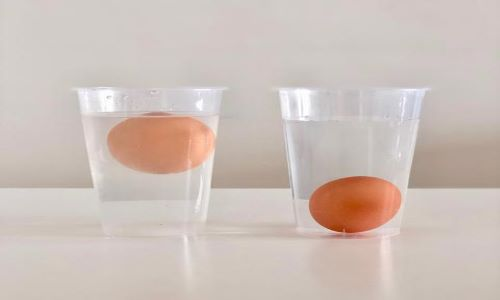
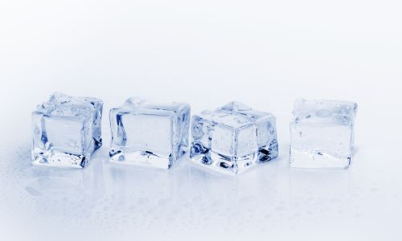

1. A great way to minimise kitchen waste is to cleverly turn your scraps into stock. Whether it's vegetable peelings, carrot tops, potato skins, onion skins, mushroom stalks or herb stems, simply pop them in a blender to make your own delicious stock. Empty everything into a heavy-bottomed pan, season with salt and cover with plenty of water. Bring to the boil, reduce the heat, cover, and simmer for a couple of hours.
2. Fill a bowl or glass with about four inches of cold water and gently place your egg(s) inside. Very fresh eggs will sink to the bottom and lay on their sides. If an egg stays at the bottom but stands on its small end, it's still fine to eat; just not quite as fresh. These "more mature" eggs are no less nutritious than a fresher egg, and most people are unlikely to notice a difference in taste. Two bonuses: 1. They'll peel without sticking to the white when hard boiled and 2. The egg whites are easier to whip into meringue when making desserts. Any eggs that are too old to eat and should be discarded will simply float to the surface. Once enough oxygen has had time to permeate the shell, it forms an air pocket large enough to keep the egg afloat in water.
 3. Homemade fries not crip enough? Try this! Before you begin preparing the potatoes, fill a large bowl with ice cold water and add a tablespoon of lemon juice. As soon as you cut the fries, you're going to transfer them to this bowl. Cut potatoes will start to discolor if they're exposed to oxygen for too long—even if they're in the water. (There's oxygen in water, after all.) But a little bit of acid in the water helps keep the potatoes nice and white.
4. Stale bread? Use water! I know this seems counterintuitive – won’t wet bread be soggy? – but trust us: You actually do want to stick that loaf of bread underneath the kitchen faucet. Turn the water on so it’s running in a slow, steady stream (it doesn’t matter if the water is hot or cold). Position the cut side of the loaf away from you and run the stale loaf of bread under the running water. The goal is to moisten the crust without getting too much water on the interior. Set the oven to 300-degrees F and place the moistened loaf directly on the rack. The low temperature will heat the water, causing the bread to steam inside the crust. After 5 minutes, give the loaf a gentle squeeze. You’re looking for a crunchy-crusted bread that has some give when you compress it. You may need to bake the bread for up to 15 minutes, depending on the size of the loaf and how much water it absorbed.